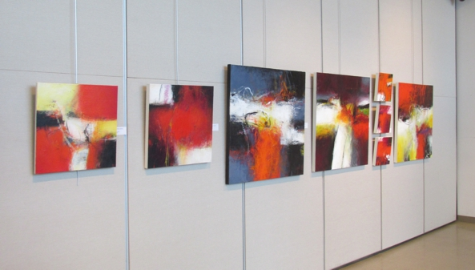
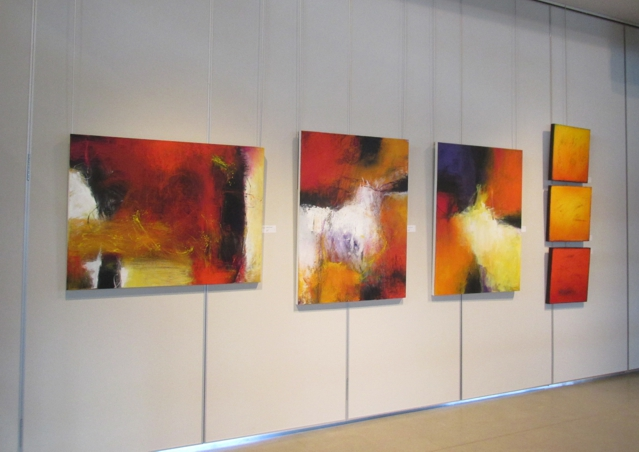

EXPOSITION à la Place des Citoyens de Sainte-Adèle
du 7 au 30 novembre 2014
Commissaire de l'exposition Johanne Martel

Thérèse Joannette vit et travaille aujourd’hui dans les Laurentides.
Elle a toujours été intéressée et attirée par l’art; la peinture, le théâtre, la danse et la littérature font partie de son univers depuis très longtemps. En 1962, elle commence des études en pédagogie. Par la suite, au fil des ans, tout en enseignant, elle étudiera constamment dans les domaines qui la passionnent afin de s’enrichir intellectuellement et de satisfaire son amour pour l’art. Une vie faite de recherche et de création à travers certificats, baccalauréats, maîtrise, et cela, tant au Québec qu’en Europe, toujours à l’affût de nouvelles connaissances.
En 1966, année de sa rencontre avec le frère Jérôme, elle découvre le monde du geste libre. Elle fréquentera l’atelier de cet artiste-pédagogue pendant plusieurs années. De 1974 à 1978, elle habite en Europe et, tout en enseignant, elle suivra des cours de modèle vivant à Strasbourg. En 1983, elle étudie à l’Université Paris 8 où elle suivra des cours en gravure et participera à une exposition collective.


A partir de 1999, retraitée de l’enseignement, elle se consacre entièrement à la peinture. D’autres cours, stages et ateliers viendront compléter sa recherche : à l’École d’été de Mont-Laurier, pendant 6 années consécutives, avec des peintres reconnus en art contemporain, à l’Université du Québec avec Christian Tisari et à l’Université Concordia avec Françoise Sullivan.
Cette dernière l’amènera plus loin dans l’exploration de la couleur et dans l’univers de l’expressionnisme abstrait. A l’été 2009 et à l’été 2011, elle suivra des stages de peinture avec deux maîtres de l’abstraction en France.


En 2012, elle a participé à une exposition collective au Musée d’art contemporain de Baie St-Paul.
A l’été 2013, elle a participé à l’exposition « Héritage de Borduas » qui a eu lieu au Musée des beaux-arts de Mont-St-Hilaire.


Conception Johanne Martel www.magadam.com .